Print and go
Workbooks that teach one skill at a time
Phonics, grammar, reading comprehension and morphology packs I wrote for my own students. Each one is a print-and-go PDF with answer keys wherever there are answers to check.

The packs
Every pack downloads instantly from Teachers Pay Teachers. Print editions are coming to Amazon.
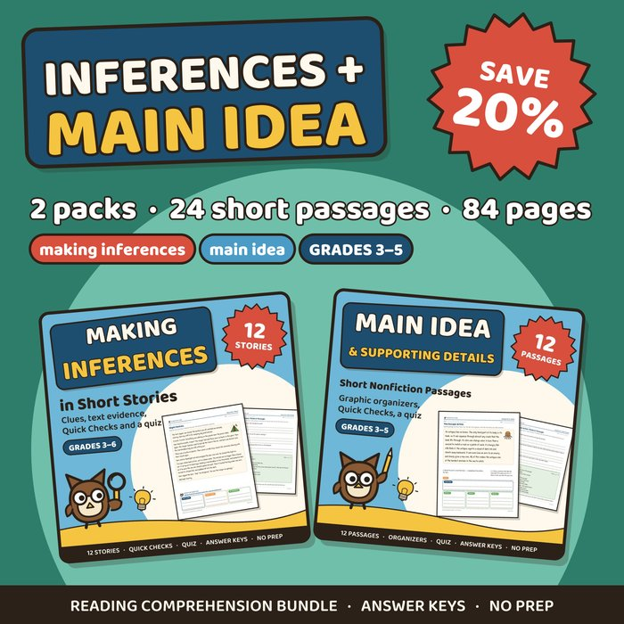
Making Inferences & Main Idea Bundle
Two comprehension packs, 24 short passages, 84 pages, grades 3–5. Save 20%.
See the bundle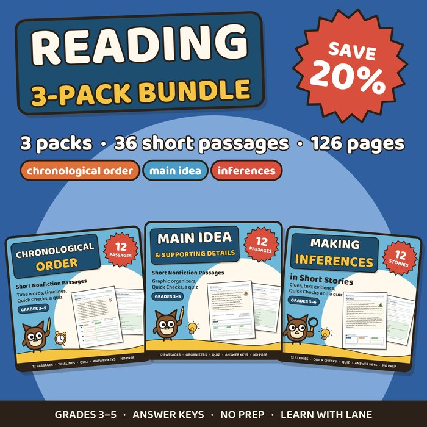
Reading 3-Pack Bundle
Chronological order, main idea and inferences: 36 short passages, 126 pages, grades 3–5. Save 20%.
See the bundle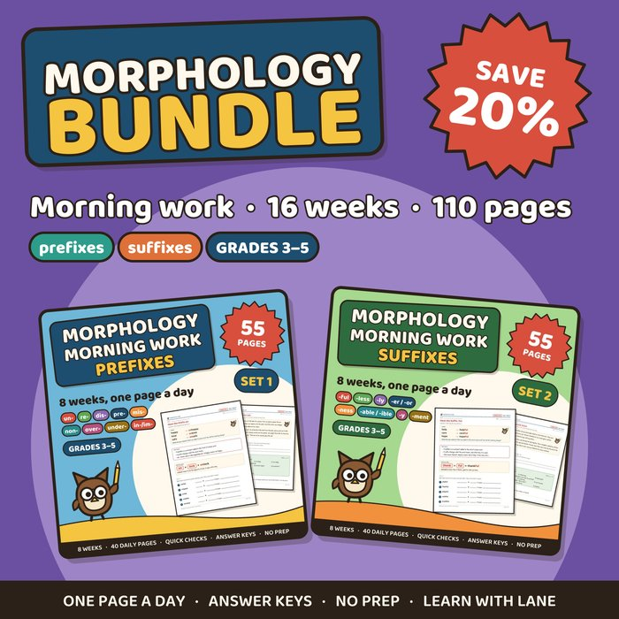
Morphology Morning Work Bundle
Prefixes, then suffixes: 16 weeks of one page a day, 110 pages, grades 3–5. Save 20%.
See the bundle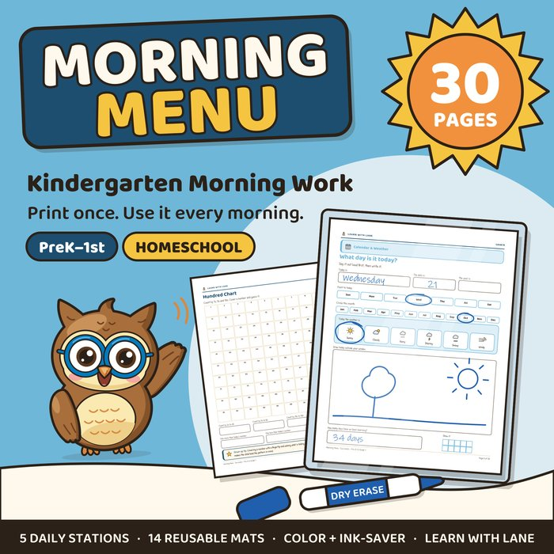
Morning Menu
A reusable morning routine: 5 daily stations at two levels and 14 dry-erase mats. 30 pages in color and ink-saver, Pre-K–1.
See the binder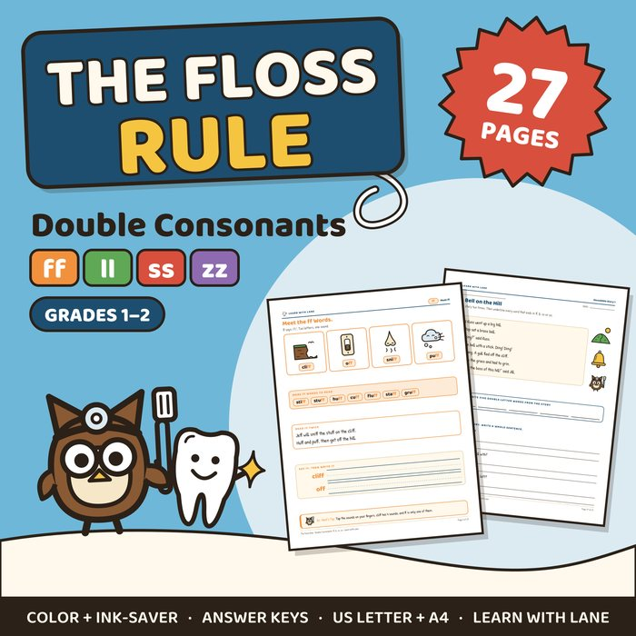
The Floss Rule (FLSZ)
FLSZ rule worksheets: ff, ll, ss, zz. 27 pages, grades 1–2.
See the pack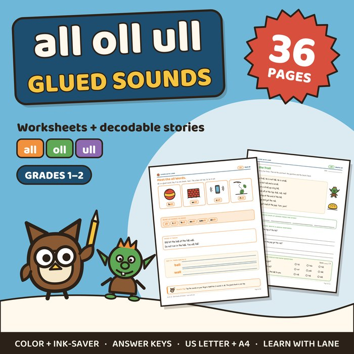
all, oll, ull (Glued Sounds)
The glued sounds after FLSZ, plus doll and gull. 5 decodable stories, 36 pages, grades 1–2.
See the pack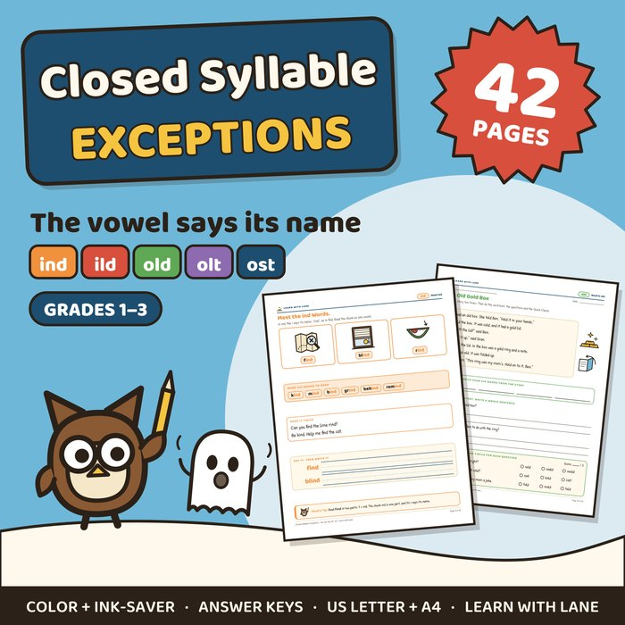
Closed Syllable Exceptions
ind, ild, old, olt, ost: the vowel says its name, plus the short look-alikes. 7 decodable stories, 42 pages, grades 1–3.
See the pack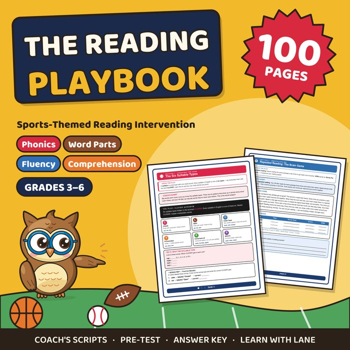
The Reading Playbook
100 pages of phonics, fluency and comprehension for older readers.
See the Playbook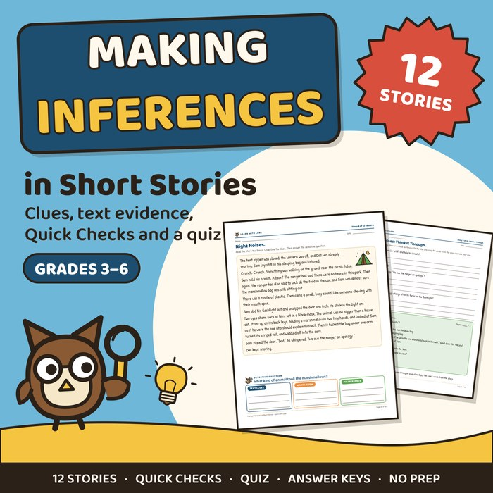
Making Inferences in Short Stories
12 short stories with text evidence questions and a quiz. 42 pages, grades 3–6.
See the pack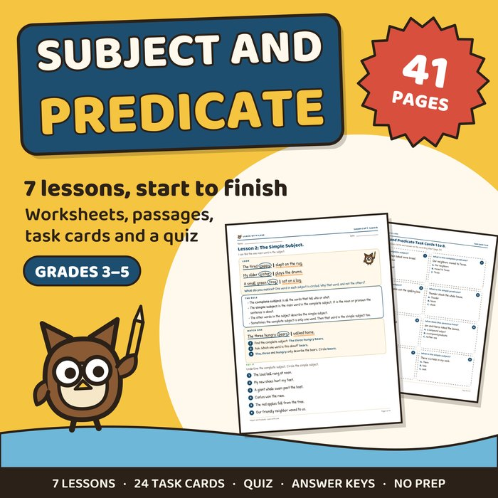
Subject and Predicate
7 grammar lessons with passages, task cards and a quiz. 41 pages, grades 3–5.
See the pack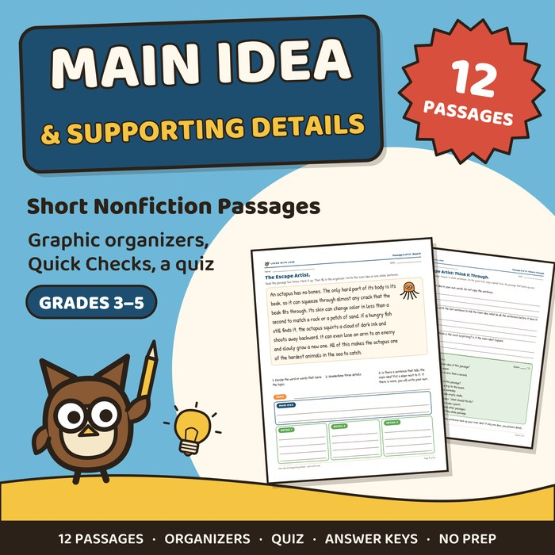
Main Idea and Supporting Details
Main idea (or central idea) and supporting details: 12 short nonfiction passages with graphic organizers and a quiz. 42 pages, grades 3–5.
See the pack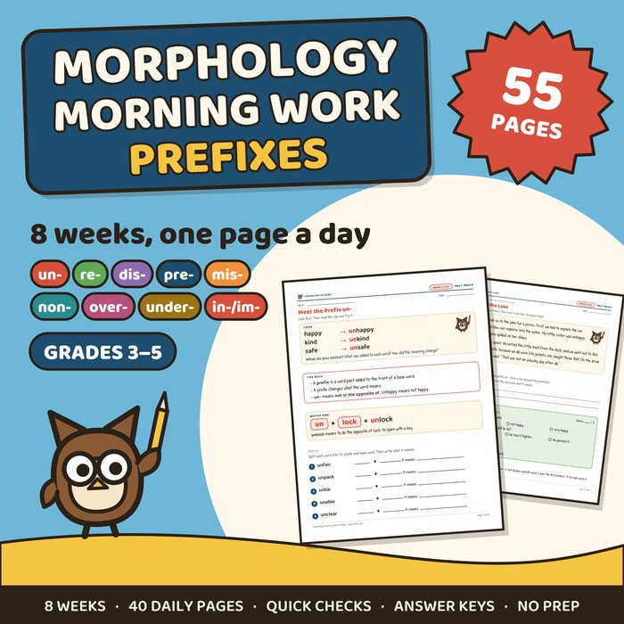
Morphology Morning Work: Prefixes
8 weeks of daily prefix practice with Friday passages and Quick Checks. 55 pages, grades 3–5.
See the pack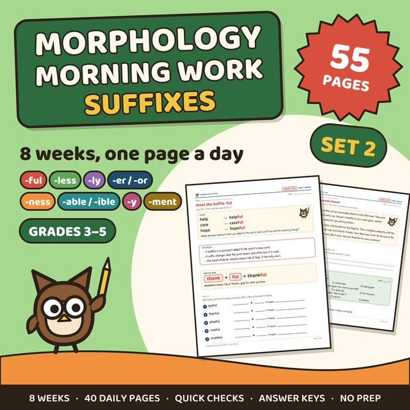
Morphology Morning Work: Suffixes
8 weeks of daily suffix practice with Friday passages and Quick Checks. 55 pages, grades 3–5.
See the pack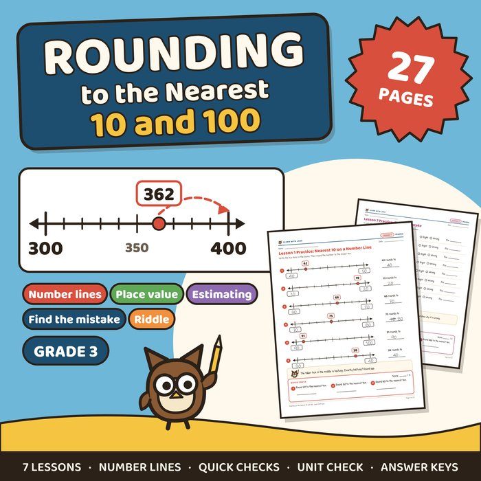
Rounding to the Nearest 10 and 100
7 number line lessons, a find-the-mistake page, a riddle and a unit check. 27 pages, grade 3.
See the pack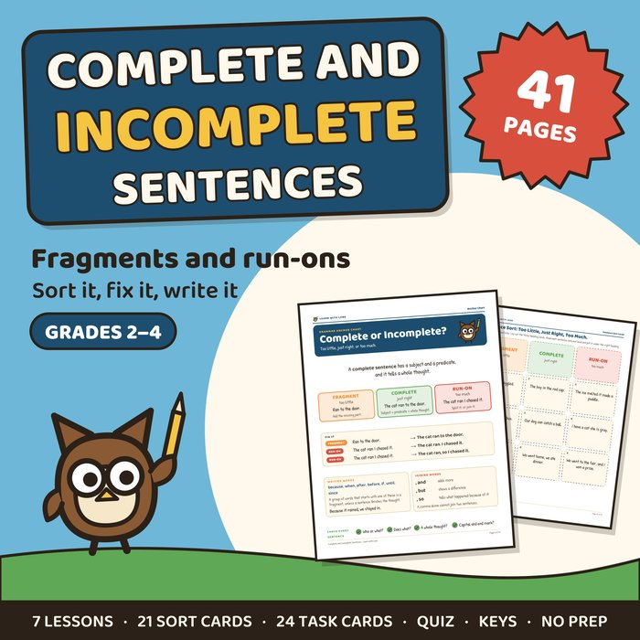
Complete and Incomplete Sentences
7 lessons on fragments and run-ons, 21 sort cards, 24 task cards and a quiz. 41 pages, grades 2–4.
See the pack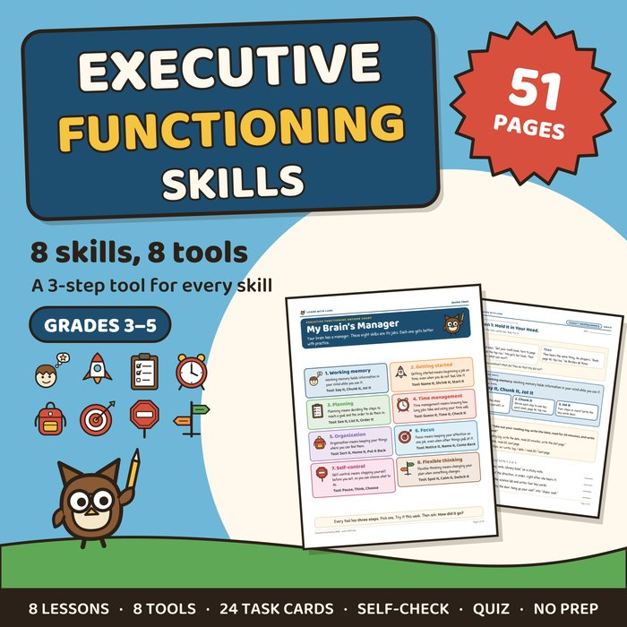
Executive Functioning Curriculum
8 skills from working memory to flexible thinking, each with a 3-step tool, a story and a Use It page. 51 pages, grades 3–5.
See the pack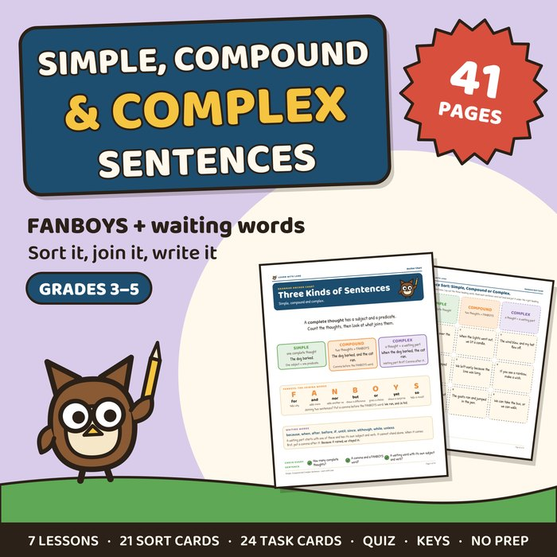
Simple, Compound and Complex Sentences
7 lessons on FANBOYS, waiting words and the commas that go with them, 21 sort cards, 24 task cards and a quiz. 41 pages, grades 3–5.
See the pack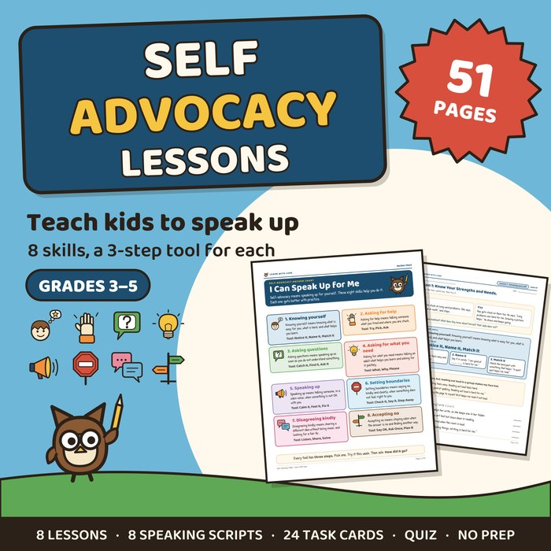
Self Advocacy Lessons and Activities
8 lessons on speaking up for yourself, from asking for help to saying no, each with a three-step tool and a script to say out loud, plus 24 task cards and a quiz. 51 pages, grades 3–5.
See the pack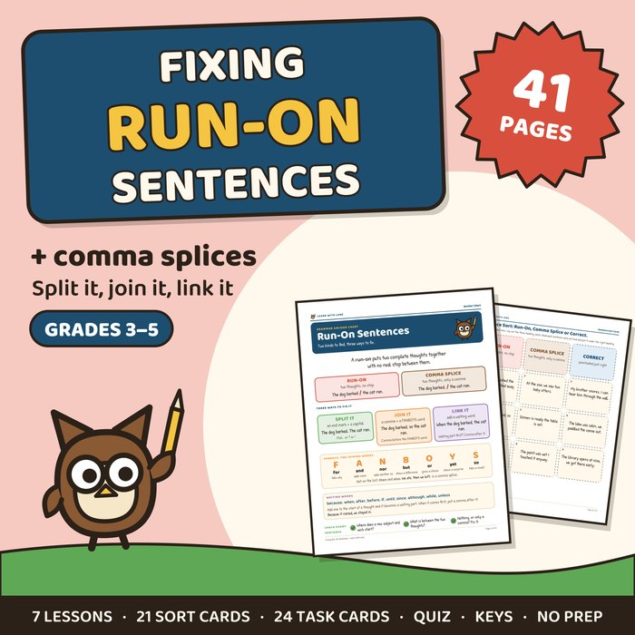
Fixing Run-On Sentences
7 lessons on run-ons and comma splices and three ways to fix them, plus fragments vs run-ons, 21 sort cards, 24 task cards and a quiz. 41 pages, grades 3–5.
See the pack